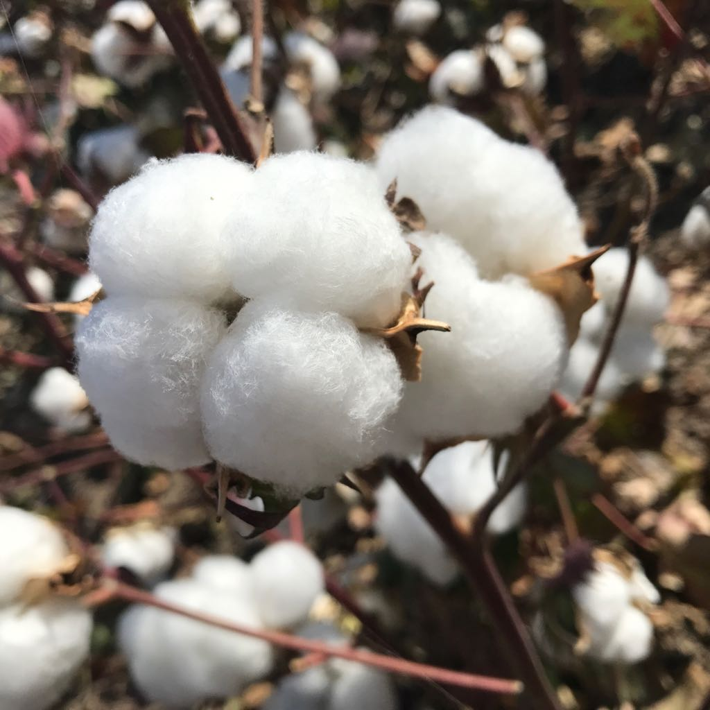

Agricultura reconoce a la Organización Interprofesional Agroalimentaria Andaluza para el Algodón
La Consejería de Agricultura, Pesca y Desarrollo Rural ha publicado la orden por la que reconoce a la Asociación Interprofesional del Algodón como Organización Interprofesional Agroalimentaria Andaluza para el Algodón, según el Boletín Oficial de la Junta de Andalucía (BOJA) del viernes 28 de diciembre de 2018.
Este reconocimiento, a petición de la asociación, contribuye a impulsar la vertebración y ordenación del sector, así como la competitividad y el aumento del valor añadido. En esta organización se integran el sector productor, transformador y comercializador, a través de Asaja, COAG, UPA, Aeda (Asociación Española de Desmotadoras de Algodón) y Adesur (Asociación de Desmotadores del Sur).

Enlace a la página
Agricultura inicia la resolución de ayudas para las zonas rurales con la luz verde a 92 expedientes que suman 6,5 millones
La Consejería de Agricultura, Pesca y Desarrollo Rural ha iniciado la resolución de ayudas que respaldan los proyectos de emprendimiento y dinamización social y económica del medio rural gestionados a través de los Grupos de Desarrollo Rural (GDR) de Andalucía. Hasta la fecha, estas entidades han remitido un total de 92 propuestas definitivas correspondientes a la convocatoria 2017 y cuyo importe subvencionable supera los 6,5 millones de euros en global. Estas subvenciones del Programa de Desarrollo Rural (PDR) 2014-2020 respaldan actuaciones incluidas en las Estrategias de Desarrollo Local Leader que, cofinanciadas por el Fondo Europeo Agrícola de Desarrollo Rural (Feader), inciden de un modo directo en la fijación de la población al territorio.

Enlace a la página